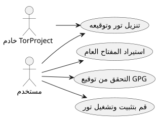

تثبيت وتحقق من متصفح تور على Ubuntu
Publié le 05 October 2025
مقدمة
في عالم حيث أصبحت الخصوصية الرقمية أكثر تهديدًا، Tor Browser يظل أداة أساسية لحماية هويته وحرية المعلومات. ومع ذلك، من الضروري ألا تُنفّذ أبداً برنامجًا تم تنزيله دون أن تكونتحقق من أصالته. يقدم هذا المقال طريقة شاملة لـ:
-
تحميل Tor Browser وتوقيعه`.asc`
-
تحقق من صحة الملف الذي تم تنزيله
-
تثبيت وتشغيل Tor Browser على أوبنتو
-
أضفه إلى قوائم سطح المكتب للاستخدام اليومي
-
استكشاف الموارد التعليمية وOSINT الأخلاقي عبر تور
تحميل تور وتوقيعه
أنشئ مجلدًا مخصصًا لمتصفح تور :
mkdir -p ~/workspace/tipiak/tor
cd ~/workspace/tipiak/torثم قم بتنزيل أرشيف متصفح تور وتوقيعه:
wget https://www.torproject.org/dist/torbrowser/14.5.7/tor-browser-linux-x86_64-14.5.7.tar.xz
wget https://www.torproject.org/dist/torbrowser/14.5.7/tor-browser-linux-x86_64-14.5.7.tar.xz.ascالتحقق التشفيري للتوقيع
هذه الخطوة هيضروريللتأكد من أن الملف المحمل يأتي بالفعل من Tor Project ولم يُعدل.
استيراد المفتاح العام لمشروع تور
gpg --auto-key-locate nodefault,wkd --locate-keys torbrowser@torproject.orgتحقق من أن المفتاح قد تم استيراده جيدًا:
gpg --list-keys torbrowser@torproject.org2. التحقق من التوقيع
gpg --verify tor-browser-linux-x86_64-14.5.7.tar.xz.asc tor-browser-linux-x86_64-14.5.7.tar.xzإذا كان كل شيء صحيحًا، فسيظهر الرسالة التالية :
gpg: Good signature from "Tor Browser Developers (signing key)"في حالة تحذير المفتاح غير المصادق عليه، هذا يعني ببساطة أنك لم توقّع بعد مفتاح الثقة لمشروع تور، لكن التوقيع يبقى صالحًا.
تمرين عملي: التوقيع صالح لكن المفتاح غير معتمد
من الشائع مواجهة رسالة مثل هذه أثناء الفحص :
gpg --verify tor-browser-linux-x86_64-14.5.7.tar.xz.asc tor-browser-linux-x86_64-14.5.7.tar.xz
gpg: Signature faite le mar. 16 sept. 2025 14:26:26 CEST
gpg: avec la clef RSA CAAE408AEBE2288E96FC5D5E157432CF78A65729
gpg: Bonne signature de « Tor Browser Developers (signing key) <torbrowser@torproject.org> » [inconnu]
gpg: Attention : cette clef n'est pas certifiée avec une signature de confiance.
gpg: Rien n'indique que la signature appartient à son propriétaire.
Empreinte de clef principale : EF6E 286D DA85 EA2A 4BA7 DE68 4E2C 6E87 9329 8290
Empreinte de la sous-clef : CAAE 408A EBE2 288E 96FC 5D5E 1574 32CF 78A6 5729هذا الرسالة تشير إلى أن التوقيع فنيًا "جيد" (الملف لم يُعدل)، لكن نظام GPG الخاص بك لا يمكنه تصديق الثقة في المفتاح نفسه. لتبديد هذا الشك، من الضروري مقارنة بصمة المفتاح الرئيسي (EF6E 286D DA85 EA2A 4BA7 DE68 4E2C 6E87 9329 8290) مع المنشورة على الموقع الرسمي لمشروع تور.
وفقًا للموقع الرسمي، البصمة المتوقعة هي :`EF6E286DDA85EA2A4BA7DE684E2C6E8793298290`.
بما أن البصمة المعروضة من`gpg`يتطابق exactement مع ذلك الموجود في الموقع الرسمي، يمكنك التأكد من أن المفتاح شرعي والملف آمن. تحذير \"مفتاح غير معتمد\" هو بعد ذلك معلومات حول إعدادات GPG المحلية الخاصة بك، وليس حول صحة التوقيع أو أصالة الملف.
لماذا يجب التحقق من التوقيع؟
التحقق من توقيعات GPG هو إجراء أساسي للأمان الرقمي. وهي تسمح بـ :
-
يضمنالأصالةمن البرنامج المحمل
-
منع تثبيت ملف تم اختراقه من قبل طرف خبيث
-
المشاركة فيالسيادة الرقميةفردية
-
تعزيز ثقافة رقمية مسؤولة وأخلاقية

استخراج وإطلاق متصفح تور
استخرج الأرشيف المحمل :
tar -xvf tor-browser-linux-x86_64-14.5.7.tar.xz
cd tor-browserثم شغّل المتصفح :
./start-tor-browser.desktopعند أول التشغيل، سيفتح نافذة إعدادات لإقامة الاتصال بشبكة تور.
تكامل مع سطح مكتب Ubuntu
لإضافة Tor Browser في قائمة التطبيقات :
./start-tor-browser.desktop --register-appيمكنك بعد ذلك:
-
تشغيل Tor Browser من قائمة التطبيقات
-
أضفه إلى المفضلة في Dock
-
إنشاء اختصار لوحة المفاتيح إذا رغبت

استكشاف الموارد التعليمية مع تور
Tor ليس مجرد أداة لإخفاء الهوية. إنه يشكل بوابة للوصول إلى موارد تعليمية وبحثية، خاصة في مجالات :
-
OSINT (الاستخبارات من المصادر المفتوحة)
-
مشاركة تعليمية ومفتوحة المصدر
-
https://archive.org(الوصول عبر تور لمزيد من الخصوصية)
-
https://github.com/(يمكن الوصول إليه عبر Tor)
-
https://librarygenesis.pro(الوصول إلى الأدب العلمي الحر)
-
نقل المعرفة وفهم الإنسان في المجتمع الرقمي
-
مصادر حول الثقافة الرقمية، وحرية التعبير، والوصول إلى المعرفة
-
وثيقة حرة عن الأمن السيبراني وأخلاقيات التكنولوجيا
تحديث متصفح تور
لضمان أمانٍ مثالي، من الضروري الحفاظ على Tor Browser محدثًا. يحتوي المتصفح على آلية تحديث تلقائي يمكن تشغيلها من سطر الأوامر.
من دليل تثبيت متصفح Tor، يكفي إعادة تشغيل سكريبت البدء :
cd ~/workspace/tipiak/tor/tor-browser
./start-tor-browser.desktopعند التشغيل، سيتحقق Tor Browser تلقائيًا مما إذا كان هناك إصدار جديد. إذا كان الأمر كذلك، سيقوم بتنزيله وتثبيته لك.
هذه الطريقة البسيطة تضمن أن لديك دائمًا أحدث تصحيحات الأمان والتحسينات الأحدث، وهو أمر ضروري لتصفح آمن.
خاتمة
التحقق من تنزيلاته هو رد فعل غريزي أساسي لأي شخص يرغب في التطور في بيئة رقمية آمنة. تثبيت Tor بطريقة موثقة، هذاحماية نزاهته الرقمية, الحفاظ على الثقة في البرمجيات الحرة, et تعزيز استقلاليته المعلوماتية.
الأمان الرقمي هو عمل من الوعي، وليس من الجنون.
المراجع
-
الموقع الرسمي لمشروع تور :https://www.torproject.org/download/[https://www.torproject.org/download/]
-
وثائق التحقق من التوقيعات :https://support.torproject.org/tbb/how-to-verify-signature/[https://support.torproject.org/tbb/how-to-verify-signature/]
-
وثائق أوبونتو :https://ubuntu.com[https://ubuntu.com]
-
الأرشيف التعليمي :https://archive.org/details/opensource[https://archive.org/details/opensource]
|
هذا المقال جزء من السلسلة الأمان والوعي الرقمي, الهادف إلى تعزيز ممارسات مسؤولة و tربوية حول الأدوات الحرة. |